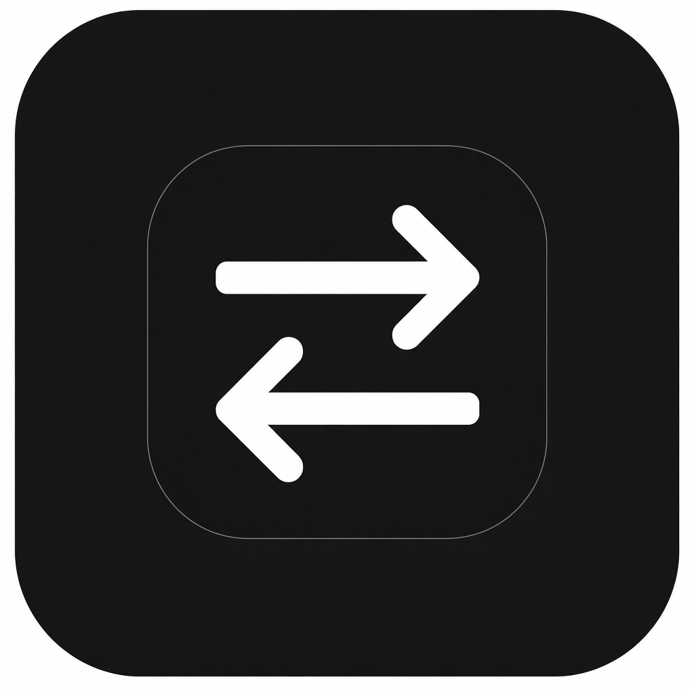

TabHandoffShips today Coding agents
One task. The next agent picks up where you left off.
The open handoff layer for AI coding agents — portable verified packages so progress isn’t lost. Not a chatbot. Not a model dashboard. Browser capture ships today.

How it works
Beachhead: reliable handoffs between AI coding agents. Status stays honest — never pretends an agent ran or continued when it didn’t.
-
01 · Capture
Browser context Today
Hand off a page from Chrome, Edge, or Brave (Load unpacked until the Chrome Web Store listing exists). URL, instruction, optional selection and screenshot — cookies and passwords stay out by design.
-
02 · Package
Portable verified handoff
Build an open package (schema 0.1 portable / 0.2 verified) agents can validate, continue, and check — claims, permissions, and continuation proofs instead of a chat transcript dump.
-
03 · Continue
Next coding agent
Pass the package to a compatible CLI or MCP agent. Optional local bridge / desktop helps with loopback runs and history — infrastructure, not the product story.

What TabHandoff is
Universal handoff and execution layer for AI agents: an open portable format plus a runnable reference implementation. End goal: seamless, lossless, one-click — one task, any compatible agent, no lost progress.
- Today: coding-agent handoffs, browser capture, CLI / MCP verify & continue, optional local bridge.
- Not this: another chatbot UI or “pick a model” dashboard.
- Longer-term commercial direction (not shipped): managed compatibility, shared history, collaboration, governance, audit.
Roadmap Not shipped
Labeled clearly so we don’t burn trust. None of these are live product claims yet.
- File and desktop capture (beyond browser tabs)
- “Any agent anywhere” beyond the coding-agent beachhead
- One-click consumer install (Chrome Web Store, signed installers)
- Managed compatibility, shared history, collaboration, governance
Local-first packages
Captured page context stays on your machine unless you export or share a package. Full policy: Privacy.
- Captured: page URL/title, your instruction, optional selection and screenshot.
-
Optional loopback bridge on
127.0.0.1— not a TabHandoff cloud account. - Cookies, passwords, and authenticated browser state are not copied into packages by design.
Start with a handoff package
Setup for coding-agent workflows. Store listings and signed installers appear only when published.